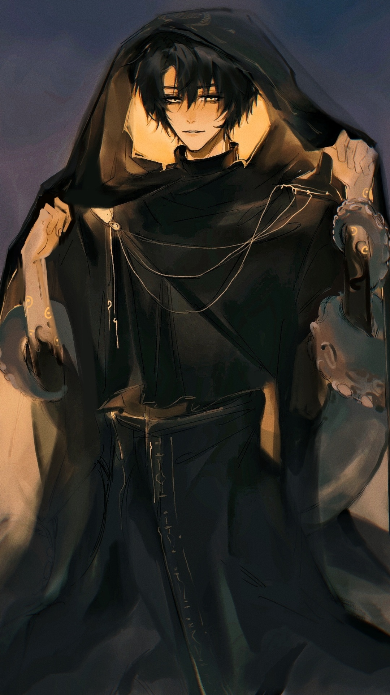
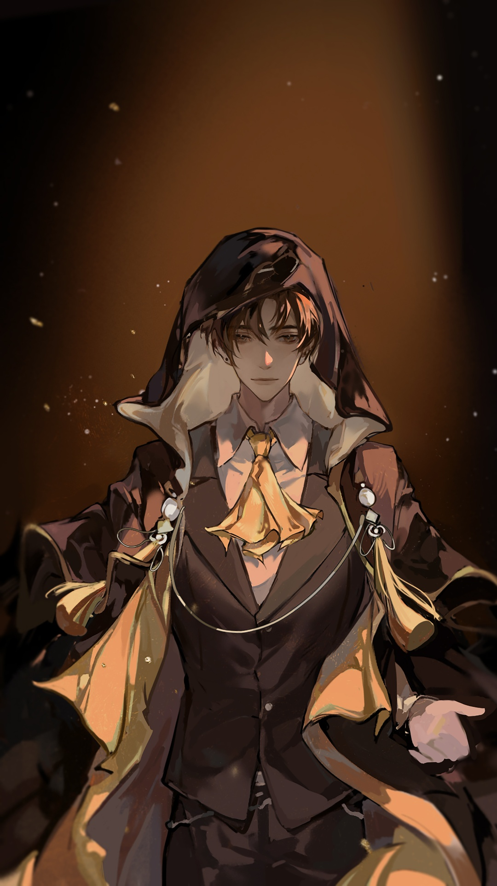
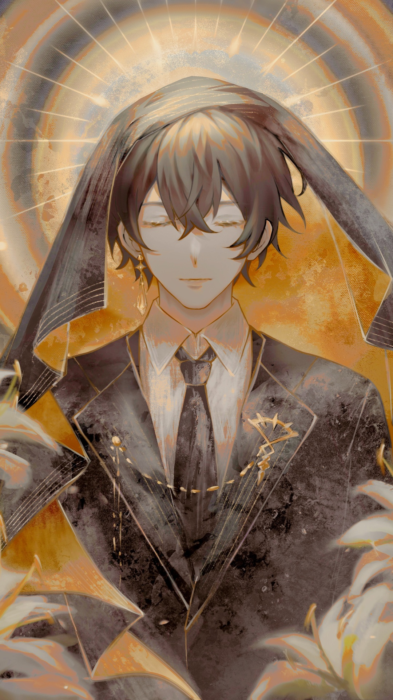

PATH WAY
LORD OF THE MYSTERY
The Fool, The Mysterious Ruler, The King of Yellow and Black
Klein Moretti is the main protagonist of Lord of Mysteries, and a character of Circle of Inevitability. "He" is currently the owner of Sefirah Castle, and Half a Lord of Mysteries with authorities over the Fool, Door and Error Pathways. "He" is also the mysterious leader of the Tarot Club known as The Fool and a Transmigrator who comes from the modern era. From year 1352 of the Fifth Epoch, "He" became the God of the Church of the Fool.
Name
Name
Name
Some places in Real-World
June 28th to September 16th in the year 1349
Tingen is known as the City of Universities. There are two universities, Tingen and Khoy, as well as technical schools, law colleges, and business colleges. The City was almost destroyed by the True Creator after he attempted to descend. Tingen is situated in the north of the Loen Kingdom, giving it unique climate characteristics.
September 16th, 1349 to the new year of 1350
The City of Backlund is the capital of the Loen Kingdom. Also known as the "Land of Hope" and "City of Cities", it is one of the largest cities of the kingdom. It was also called as the Capital of Dust, because of the atmospheric pollution in the city. Backlund was located in the middle of the kingdom, only dozens of kilometres from the Sonia Sea.
From June 21, 1350 to 1352
The City of Silver was known as the Kingdom of Silver in the past. is situated in the Forsaken Land of the Gods (Eastern Continent) and is covered by constant lightning strikes. In the City of Silver, the frequency of lightning is use to demarcate days. One cycle is a day, and the four seasons only exist in books, so they can’t exactly grasp the specific number of days.
asassas